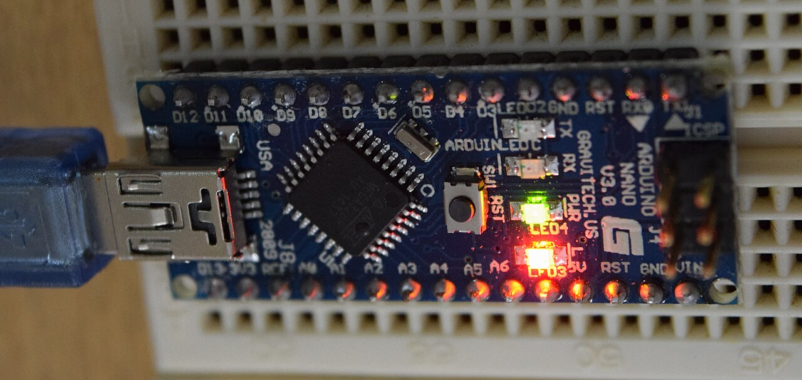
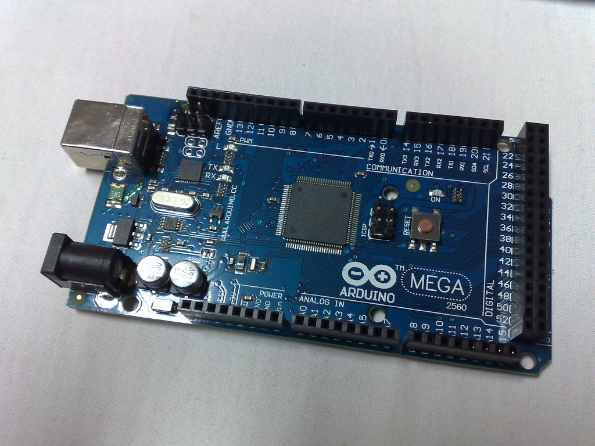

ความรู้เบื้องต้นเกี่ยวกับ
ไมโครคอนโทรลเลอร์
2D16 = 4510
1 AND 1 = 1
หัวข้อเรื่อง
1.1 ระบบตัวเลขและรหัส
เลขฐาน 2, 8, 10, 16 และการแปลงเลขฐาน
1.2 ดิจิทัลพื้นฐาน
ระดับลอจิก 0/1 และลอจิกเกต
1.3 โครงสร้างพื้นฐานของระบบคอมพิวเตอร์
อินพุต · เอาต์พุต · CPU · หน่วยความจำ
1.4 ไมโครคอนโทรลเลอร์ Arduino
แพลตฟอร์ม บอร์ด และซอฟต์แวร์
ก่อนจะใช้ไมโครคอนโทรลเลอร์ได้
ต้องเข้าใจ 3 เรื่องนี้ก่อน
ระบบตัวเลข
คอมพิวเตอร์คิดด้วยเลข 0 กับ 1
ดิจิทัลพื้นฐาน
ลอจิก 0/1 และเกตต่าง ๆ
Arduino
ไมโครคอนโทรลเลอร์ที่จะใช้ฝึก
แสดงความรู้เกี่ยวกับ
ไมโครคอนโทรลเลอร์ Arduino
จุดประสงค์ทั่วไป — เพื่อให้มีความรู้เกี่ยวกับ
- ระบบตัวเลขและดิจิทัลพื้นฐาน
- โครงสร้างพื้นฐานของระบบคอมพิวเตอร์
- ไมโครคอนโทรลเลอร์ Arduino
เรียนจบบทนี้แล้ว นักเรียนสามารถ…
- บอกวิธีการแปลงเลขฐานในระบบตัวเลขและดิจิทัลพื้นฐานได้
- บอกเกี่ยวกับโครงสร้างพื้นฐานของระบบคอมพิวเตอร์ได้
- บอกเกี่ยวกับไมโครคอนโทรลเลอร์ Arduino ได้
- ทำแบบฝึกหัดเสร็จทันเวลาและทำแบบทดสอบผ่านเกณฑ์ที่กำหนด
ไมโครคอนโทรลเลอร์ (Microcontroller)
ไมโคร = ขนาดเล็ก
คอนโทรลเลอร์ = ตัวควบคุม
➜ อุปกรณ์ควบคุมขนาดเล็ก ที่มีความสามารถคล้ายคอมพิวเตอร์
ข้างในชิปเดียว มีครบเหมือนคอมพิวเตอร์
- รวม หน่วยประมวลผล
- รวม หน่วยความจำ
- รวม พอร์ต I/O
…บรรจุไว้ใน “ตัวถังเดียวกัน”
ไมโครคอนโทรลเลอร์ ≠ ไมโครโปรเซสเซอร์
ไมโครโปรเซสเซอร์ (MPU)
ต้องทำงานร่วมกับอุปกรณ์ภายนอก เช่น หน่วยความจำ, I/O
ไมโครคอนโทรลเลอร์ (MCU)
สมบูรณ์ในตัวเอง ส่วนประกอบครบในชิปเดียว
ในบ้านเรา มีอุปกรณ์อะไรบ้าง
ที่น่าจะมีไมโครคอนโทรลเลอร์อยู่ข้างใน?
คำใบ้: อุปกรณ์ที่ “กดปุ่มตั้งค่า” แล้วทำงานเองได้
ไมโครคอนโทรลเลอร์ทำงานด้วย…
ระบบตัวเลข
เลขฐาน 2, 16
ระบบการเข้ารหัส
แทนตัวอักษรด้วยเลข
ระบบลอจิกเกต
AND OR NOT …
ทั้งหมดคือ การทำงานภายในคอมพิวเตอร์ — เริ่มกันเลย!
ระบบตัวเลขและรหัส
มนุษย์นับเลขอย่างไร · คอมพิวเตอร์นับเลขอย่างไร · แปลงเลขฐานไปมา
มนุษย์ใช้วิธี “จับคู่” สิ่งของ
นิ้วมือ
1 นิ้ว แทนสัตว์ 1 ตัว
ก้อนหิน
ใช้บันทึกจำนวน
ขีด / สลัก
บนพื้นดิน หรือต้นไม้
ต่อมาใช้ สัญลักษณ์ แทนจำนวน — แต่ในสมัยโบราณยัง ไม่มี “ศูนย์”
เลขฮินดู-อารบิก (Hindu-Arabic numerals)
อินเดีย
ราวศตวรรษที่ 3 ก่อน ค.ศ. มีตัวเลขพราหมี (ยังไม่มีค่าประจำตำแหน่ง)
ค.ศ. 594
หลักฐานเก่าสุดที่ใช้ ค่าประจำตำแหน่ง ในอินเดีย
โลกอาหรับ
ชาวอาหรับรับไปใช้ ยุโรปจึงเรียกว่า “ตัวเลขอารบิก”
ค.ศ. 1202
ฟีโบนัชชี (Leonardo Pisano) เผยแพร่ในยุโรปผ่านหนังสือ Liber Abaci
ปัจจุบันใช้ 10 ตัว: 0 1 2 3 4 5 6 7 8 9 ทั่วโลก เสริม
ค่าของตัวเลข ขึ้นกับ “ตำแหน่ง”
“2” อยู่หลักร้อย = 200
“2” อยู่หลักสิบ = 20
“2” ใน 205 มีค่าเป็น 10 เท่า ของ “2” ใน 25 → ต้องมี 0 บอกว่าหลักสิบว่าง
0 จึงเรียกว่า ตัวรั้งตำแหน่ง (Place holder)
คอมพิวเตอร์รับรู้ได้แค่ 2 สภาวะ
มีแรงดันไฟฟ้า
ประมาณ 5 V (วงจรความเร็วต่ำ)
ไม่มีแรงดันไฟฟ้า
ประมาณ 0 V
ใช้ 2 สภาวะเพื่อ ป้องกันการผิดพลาดของข้อมูล · คอมพิวเตอร์ความเร็วสูงลดแรงดันลอจิก 1 ลง เพื่อลดความร้อนของ CPU
เลขฐานที่ต้องรู้จัก
| เลขฐาน | ชื่อเรียก | ตัวเลขที่ใช้ | ตัวอย่าง |
|---|---|---|---|
| ฐาน 2 | Binary (ไบนารี) | 0 1 | 1011012 |
| ฐาน 8 | Octal (ออกทัล) | 0 – 7 | 765438 |
| ฐาน 10 | Decimal (เดซิมอล) | 0 – 9 | 4510 |
| ฐาน 16 | Hexadecimal (เฮกซ์) | 0 – 9, A – F | 2D16 หรือ 2DH |
💡 ตัวเลขห้อยท้าย (₂ ₈ ₁₀ ₁₆) บอกว่าเป็น เลขฐานอะไร · การเขียนโปรแกรมใช้หลัก ๆ คือฐาน 2, 10, 16
บิต (bit) และ ไบต์ (byte)
8 บิต = 1 ไบต์
- บิต = เลขฐาน 2 หนึ่งหลัก (0 หรือ 1)
- 4 บิต = เลขฐาน 16 หนึ่งหลัก
- 1 ไบต์ = 8 บิต แทนค่าได้ 0 – 255
- MSB บิตซ้ายสุด ค่ามากสุด · LSB บิตขวาสุด ค่าน้อยสุด
ใช้วิธี “หารซ้ำ เก็บเศษ”
- นำเลขฐาน 10 หารด้วยฐานที่ต้องการ แล้วเก็บ เศษ ไว้
- เศษครั้งแรก = บิตต่ำสุด (LSB)
- นำ ผลลัพธ์ ไปหารต่อ จนกว่าผลลัพธ์จะเป็น 0
- อ่านเศษ จากล่างขึ้นบน (MSB → LSB) = คำตอบ
แปลง 4510 เป็นเลขฐาน 2
แปลง 4510 เป็นเลขฐาน 3
ตรวจ: 1×27 + 2×9 + 0×3 + 0×1 = 45 ✓
แปลง 4510 เป็นเลขฐาน 4
ตรวจ: 2×16 + 3×4 + 1×1 = 45 ✓
ใช้ “น้ำหนักประจำหลัก” คูณแล้วบวก
| น้ำหนัก | … ฐาน3 | ฐาน2 | ฐาน1 | ฐาน0 = 1 |
|---|---|---|---|---|
| หลัก | … | หลักที่ 3 | หลักที่ 2 | หลักขวาสุด (LSB) |
- หลักขวาสุดมีน้ำหนัก = ฐาน0 = 1 · หลักถัดไป = ฐาน1, ฐาน2, …
- นำ ตัวเลขแต่ละหลัก × น้ำหนัก แล้วนำผลคูณทั้งหมดมา บวกกัน
แปลง 765438 เป็นเลขฐาน 10
| น้ำหนัก | 84 | 83 | 82 | 81 | 80 |
|---|---|---|---|---|---|
| เลข | 7 | 6 | 5 | 4 | 3 |
| ผลคูณ | 7×4096 = 28672 | 6×512 = 3072 | 5×64 = 320 | 4×8 = 32 | 3×1 = 3 |
แปลง 434215 เป็นเลขฐาน 10
| น้ำหนัก | 54 = 625 | 53 = 125 | 52 = 25 | 51 = 5 | 50 = 1 |
|---|---|---|---|---|---|
| เลข | 4 | 3 | 4 | 2 | 1 |
| ผลคูณ | 2500 | 375 | 100 | 10 | 1 |
แปลง 110102 เป็นเลขฐาน 10
| น้ำหนัก | 24 = 16 | 23 = 8 | 22 = 4 | 21 = 2 | 20 = 1 |
|---|---|---|---|---|---|
| เลข | 1 | 1 | 0 | 1 | 0 |
| ผลคูณ | 16 | 8 | 0 | 2 | 0 |
น้ำหนักประจำหลักของเลขฐาน 2
| 210 | 29 | 28 | 27 | 26 | 25 | 24 | 23 | 22 | 21 | 20 |
| 1024 | 512 | 256 | 128 | 64 | 32 | 16 | 8 | 4 | 2 | 1 |
หลักไปทางซ้ายทีละ 1 หลัก → น้ำหนัก × 2
ใช้ได้ทั้งแปลงฐาน 2 → 10 (บวกน้ำหนักของหลักที่เป็น 1) และ 10 → 2 (กระจายตามน้ำหนัก)
ทำไมต้องใช้เลขฐาน 16?
เลขฐาน 2 ยาวมาก อ่านยาก → ใช้ฐาน 16 แทน · มี 16 ตัว: 0–9 และ A B C D E F (แทน 10–15)
ความสัมพันธ์ของเลขฐาน 10, 2, 16
| ฐาน 10 | ฐาน 2 | ฐาน 16 |
|---|---|---|
| 0 | 0000 | 0 |
| 1 | 0001 | 1 |
| 2 | 0010 | 2 |
| 3 | 0011 | 3 |
| 4 | 0100 | 4 |
| 5 | 0101 | 5 |
| 6 | 0110 | 6 |
| 7 | 0111 | 7 |
| ฐาน 10 | ฐาน 2 | ฐาน 16 |
|---|---|---|
| 8 | 1000 | 8 |
| 9 | 1001 | 9 |
| 10 | 1010 | A |
| 11 | 1011 | B |
| 12 | 1100 | C |
| 13 | 1101 | D |
| 14 | 1110 | E |
| 15 | 1111 | F |
เลขฐาน 16 1 หลัก
= เลขฐาน 2 4 บิต พอดี
แบ่งกลุ่มละ 4 บิต จากขวาไปซ้าย
โจทย์: แปลง 1001111101012 เป็นเลขฐาน 16
เปลี่ยนเลขฐาน 16 ทีละหลัก เป็น 4 บิต
โจทย์: แปลง A72B16 เป็นเลขฐาน 2
แปลงเป็นฐาน 2 ก่อน แล้วจัดกลุ่ม 4 บิต
โจทย์: แปลง 4510 เป็นเลขฐาน 16 — กระจายตามน้ำหนักบิต
| น้ำหนัก | 32 | 16 | 8 | 4 | 2 | 1 |
|---|---|---|---|---|---|---|
| 45 ได้ | 1 | 0 | 1 | 1 | 0 | 1 |
45 = 32+0+8+4+0+1 = 1011012
= 0010 1101 = 2D16
แปลง 171410 เป็นเลขฐาน 16
| 1024 | 512 | 256 | 128 | 64 | 32 | 16 | 8 | 4 | 2 | 1 |
| 1 | 1 | 0 | 1 | 0 | 1 | 1 | 0 | 0 | 1 | 0 |
1024+512+128+32+16+2 = 1714 → 110101100102
หารด้วย 16 โดยตรง (เศษ 10–15 = A–F)
4510
23410
แปลงเป็นฐาน 2 ก่อน แล้วรวมน้ำหนัก
โจทย์: แปลง 6B216 เป็นเลขฐาน 10
| 1024 | 512 | 256 | 128 | 64 | 32 | 16 | 8 | 4 | 2 | 1 |
| 1 | 1 | 0 | 1 | 0 | 1 | 1 | 0 | 0 | 1 | 0 |
รวมจากน้ำหนักของแต่ละหลักโดยตรง
6B216
= 6×162 + 11×161 + 2×160
= 1536 + 176 + 2
ABC16
= 10×162 + 11×161 + 12×160
= 2560 + 176 + 12
จำ: 160 = 1 · 161 = 16 · 162 = 256 · 163 = 4096 · A=10 B=11 C=12 D=13 E=14 F=15
แผนที่การแปลงเลขฐาน
ฐาน 10 → ฐานใด ๆ
หารด้วยฐานซ้ำ ๆ เก็บเศษ อ่านจากล่างขึ้นบน
ฐานใด ๆ → ฐาน 10
ตัวเลขแต่ละหลัก × น้ำหนัก (ฐานn) แล้วบวกกัน
ฐาน 2 → ฐาน 16
แบ่งกลุ่มละ 4 บิต จากขวาไปซ้าย
ฐาน 16 → ฐาน 2
แต่ละหลัก → 4 บิต (ดูตารางที่ 1-1)
รหัส BCD (Binary-Coded Decimal)
แทนเลขฐาน 10 ทีละหลัก ด้วยเลขฐาน 2 ขนาด 4 บิต (ใช้รหัส 8421 แทนเลข 0–9)
45 ในรหัส BCD
45 ใน เลขฐาน 2
ใช้กับงานที่แสดงตัวเลขทีละหลัก เช่น นาฬิกาดิจิทัล ตัวแสดงผล 7 ส่วน
รหัส ASCII — คอมพิวเตอร์เก็บตัวอักษรอย่างไร
ASCII เป็นรหัส 7 บิต (128 ตัว) กำหนดเลขประจำตัวอักษรภาษาอังกฤษ ตัวเลข และสัญลักษณ์
| อักขระ | ฐาน 10 | ฐาน 16 | ฐาน 2 |
|---|---|---|---|
| A | 65 | 41 | 100 0001 |
| a | 97 | 61 | 110 0001 |
| 0 (ตัวอักษรศูนย์) | 48 | 30 | 011 0000 |
| ช่องว่าง (space) | 32 | 20 | 010 0000 |
ทดสอบความเข้าใจ 1.1
ข้อ 1
1310 = ?2
8+4+0+1 = 13
ข้อ 2
11112 = ?10
8+4+2+1 = 15
ข้อ 3
1F16 = ?10
1×16 + 15×1 = 31
ดิจิทัลพื้นฐาน
ระดับลอจิก 0 กับ 1 · ลอจิกเกต 6 ชนิด
ดิจิทัล (Digital)
เทคโนโลยีอิเล็กทรอนิกส์ที่ สร้าง เก็บ และประมวลผลข้อมูลใน 2 สถานะ
บวก (มีไฟ)
ไม่บวก (ไม่มีไฟ)
เรียกว่า Binary digital — เกี่ยวข้องกับไมโครคอนโทรลเลอร์ทั้งฮาร์ดแวร์และซอฟต์แวร์
ลอจิก 0 และ 1 ไม่ต้องเป๊ะ 0 V / 5 V
รูปที่ 1-1 ระดับแรงดันของลอจิก (วาดใหม่จาก [1])
- ลอจิก 0 ≈ 0 V สูงกว่าเล็กน้อยก็ยังเป็น 0
- ลอจิก 1 ≈ 5 V ต่ำกว่าเล็กน้อยก็ยังเป็น 1
- MCU บางรุ่นใช้ไฟเลี้ยงต่ำกว่า 5 V (เช่น 3.3 V) → ลอจิก 1 ก็ต่ำลงตาม
ATmega328P อ่านค่าลอจิกที่ไฟเลี้ยง 5 V
- แรงดันอินพุต ≥ 3.0 V (0.6×VCC) อ่านเป็น 1
- แรงดันอินพุต ≤ 1.5 V (0.3×VCC) อ่านเป็น 0
- ช่วง 1.5 – 3.0 V ไม่รับประกัน ว่าจะอ่านได้ค่าใด → ควรหลีกเลี่ยง
AND: เป็น 1 เมื่อ ทุกอินพุต เป็น 1
| A | B | Q |
|---|---|---|
| 0 | 0 | 0 |
| 0 | 1 | 0 |
| 1 | 0 | 0 |
| 1 | 1 | 1 |
🔌 เหมือน สวิตช์ 2 ตัวต่ออนุกรม ต้องกดทั้ง 2 ตัว หลอดจึงติด
มีอินพุตตั้งแต่ 2 อินพุตขึ้นไป · ถ้าอินพุตใดเป็น 0 → เอาต์พุตเป็น 0
OR: เป็น 1 เมื่อ อินพุตใดอินพุตหนึ่ง เป็น 1
| A | B | Q |
|---|---|---|
| 0 | 0 | 0 |
| 0 | 1 | 1 |
| 1 | 0 | 1 |
| 1 | 1 | 1 |
🔌 เหมือน สวิตช์ 2 ตัวต่อขนาน กดตัวไหนก็ได้ หลอดก็ติด
เอาต์พุตเป็น 0 เฉพาะเมื่อ ทุกอินพุตเป็น 0
XOR: เป็น 1 เมื่ออินพุต ต่างกัน
| A | B | Q |
|---|---|---|
| 0 | 0 | 0 |
| 0 | 1 | 1 |
| 1 | 0 | 1 |
| 1 | 1 | 0 |
💡 ช่วยจำ: เหมือนกัน → 0
ต่างกัน → 1
ต่างจาก OR ตรงแถวสุดท้าย: 1 XOR 1 = 0
NOT: เอาต์พุต ตรงข้าม กับอินพุต
| A | Q |
|---|---|
| 0 | 1 |
| 1 | 0 |
มีอินพุต เพียงอินพุตเดียว
วงกลมเล็ก ⚪ = การกลับค่า
NAND = AND + NOT
เอาต์พุตของ AND ส่งเข้า NOT
| A | B | AND | NAND |
|---|---|---|---|
| 0 | 0 | 0 | 1 |
| 0 | 1 | 0 | 1 |
| 1 | 0 | 0 | 1 |
| 1 | 1 | 1 | 0 |
เอาต์พุตของ NAND ตรงข้ามกับ AND ทุกแถว
NOR = OR + NOT
เอาต์พุตของ OR ส่งเข้า NOT
| A | B | OR | NOR |
|---|---|---|---|
| 0 | 0 | 0 | 1 |
| 0 | 1 | 1 | 0 |
| 1 | 0 | 1 | 0 |
| 1 | 1 | 1 | 0 |
เอาต์พุตของ NOR ตรงข้ามกับ OR ทุกแถว
ตัวจำลองลอจิกเกต
ตารางความจริงของทุกเกต (2 อินพุต)
| A | B | AND | OR | XOR | NAND | NOR |
|---|---|---|---|---|---|---|
| 0 | 0 | 0 | 0 | 0 | 1 | 1 |
| 0 | 1 | 0 | 1 | 1 | 1 | 0 |
| 1 | 0 | 0 | 1 | 1 | 1 | 0 |
| 1 | 1 | 1 | 1 | 0 | 0 | 0 |
NOT: 0 → 1, 1 → 0
โครงสร้างพื้นฐาน
ของระบบคอมพิวเตอร์
อินพุต · เอาต์พุต · หน่วยประมวลผลกลาง · หน่วยความจำ
ไม่จำเป็นต้องหน้าตาเหมือน PC
ขอแค่มีครบ 4 ส่วน
อินพุต
Input
หน่วยประมวลผลกลาง
CPU
หน่วยความจำ
Memory
เอาต์พุต
Output
วงจรอิเล็กทรอนิกส์ใดที่มีครบ 4 ส่วน = ระบบคอมพิวเตอร์ (ไมโครคอนโทรลเลอร์ก็เช่นกัน)
ส่วนรับข้อมูล หรือ อินพุต (Input)
- เชื่อมคอมพิวเตอร์กับ อุปกรณ์ภายนอก
- แปลงสัญญาณภายนอก → ระดับลอจิก ที่วงจรภายในเข้าใจ
- เรียกว่า วงจรอินเตอร์เฟซ (Interface circuit)
⌨️ ตัวอย่าง: วงจรแป้นพิมพ์ เปลี่ยน การกดแป้น (พลังงานกล) → แรงดัน 5 V / 0 V = ลอจิก 1 / 0
ส่วนส่งข้อมูล หรือ เอาต์พุต (Output)
- รับสัญญาณจาก หน่วยประมวลผล (ลอจิก 1 / 0 ที่ 5 V / 0 V)
- ส่งให้ อุปกรณ์ภายนอก นำแรงดันไปใช้งาน
หลอด LED
ลำโพง / บัซเซอร์
มอเตอร์ (ผ่านวงจรขับ)
หน่วยประมวลผลกลาง (CPU: Central Processing Unit)
หัวใจของระบบ
คิด ประมวลผล ตาม ชุดคำสั่ง (โปรแกรม) ที่เก็บไว้ในหน่วยความจำ
ALU
Arithmetic and Logic Unit
ประมวลผล คณิตศาสตร์ และ ลอจิก
CU เสริม
Control Unit หน่วยควบคุม: อ่านคำสั่งและสั่งการให้ส่วนต่าง ๆ ทำงานตามลำดับ
หน่วยความจำ (Memory) มี 2 แบบ
หน่วยความจำถาวร
เก็บ โปรแกรม · ข้อมูล ไม่หาย แม้ไม่มีไฟเลี้ยง
ROM
หน่วยความจำชั่วคราว
พักข้อมูลขณะประมวลผล · ข้อมูล หาย เมื่อไม่มีไฟเลี้ยง
RAM
ตระกูล ROM (1)
ROM
โปรแกรม จากโรงงาน
ลบไม่ได้
PROM
โปรแกรมเองได้ ครั้งเดียว
ลบไม่ได้
EPROM
โปรแกรมเองได้หลายครั้ง
ลบด้วย แสง UV
ROM = หน่วยความจำที่ อ่านได้อย่างเดียว (ระหว่างใช้งานปกติ)
ตระกูล ROM (2): ลบได้ด้วยไฟฟ้า
E²PROM (EEPROM)
โปรแกรมเองได้หลายครั้ง ลบด้วย ไฟฟ้า
ลบ/แก้ไขได้ ระดับไบต์
Flash memory
โปรแกรมเองได้หลายครั้ง ลบด้วย ไฟฟ้า
ลบ/แก้ไขได้ ทีละบล็อก (Block)
ความแตกต่างสำคัญ: E²PROM แก้ได้ทีละ ไบต์ · Flash แก้ได้ทีละ บล็อก
RAM (Random Access Memory)
- ใช้ พักข้อมูล ระหว่างการประมวลผล
- อ่านและเขียน ได้ตามปกติ
- อ่าน/เขียนแบบ สุ่มตำแหน่ง ได้ (Random access)
- ข้อมูลคงอยู่ตราบที่มีไฟเลี้ยง และยังไม่ถูกเขียนทับ
- ไม่มีไฟเลี้ยง → ข้อมูลหาย
เปรียบเทียบหน่วยความจำ
| ชนิด | เขียนโปรแกรม | วิธีลบ | ไฟดับ ข้อมูล… |
|---|---|---|---|
| ROM | จากโรงงาน | ลบไม่ได้ | ไม่หาย |
| PROM | เองได้ 1 ครั้ง | ลบไม่ได้ | ไม่หาย |
| EPROM | เองได้หลายครั้ง | แสง UV | ไม่หาย |
| E²PROM | เองได้หลายครั้ง | ไฟฟ้า (ทีละไบต์) | ไม่หาย |
| Flash | เองได้หลายครั้ง | ไฟฟ้า (ทีละบล็อก) | ไม่หาย |
| RAM | อ่าน/เขียนได้ตลอดขณะทำงาน | หาย | |
ชิป ATmega328P บน Arduino UNO R3 มี…
Flash
เก็บโปรแกรมที่อัปโหลด
SRAM
พักตัวแปรขณะทำงาน
EEPROM
เก็บค่าตั้ง ไม่หายเมื่อปิดไฟ
ไมโครคอนโทรลเลอร์ Arduino
Arduino คืออะไร · มาจากไหน · ฮาร์ดแวร์และซอฟต์แวร์
Arduino (อาร์ดุยโน่) คืออะไร?
“Arduino is an open-source electronics platform based on easy-to-use hardware and software.”
แพลตฟอร์มอิเล็กทรอนิกส์แบบ โอเพนซอร์ส ที่ใช้ ฮาร์ดแวร์และซอฟต์แวร์ ซึ่ง ใช้งานง่าย
สร้างมาสำหรับศิลปิน นักออกแบบ และทุกคนที่สนใจสร้าง ชิ้นงานที่โต้ตอบกับผู้ใช้หรือสภาพแวดล้อมได้
เกิดที่อิตาลี ราวปี ค.ศ. 2005
- เริ่มที่ Interaction Design Institute Ivrea เมืองอีฟเรอา (Ivrea) ประเทศอิตาลี
- เป็นเครื่องมือสร้างต้นแบบง่าย ๆ สำหรับ นักศึกษา ที่ไม่มีพื้นฐานอิเล็กทรอนิกส์และการเขียนโปรแกรม
- ตั้งใจให้ ราคาถูก ทุกคนเข้าถึงได้
ทีมผู้ร่วมก่อตั้ง 5 คน
- Massimo Banzi
- David Cuartielles
- David Mellis
- Tom Igoe
- Gianluca Martino
ชื่อ “Arduino” มาจากไหน?
บาร์ในเมือง Ivrea
ทีมผู้สร้างตั้งชื่อตามบาร์ที่ไปนั่งกันประจำ
กษัตริย์ Arduin
บาร์นั้นตั้งชื่อตามกษัตริย์อาร์ดุยน์ ผู้ครองอิตาลีช่วงสั้น ๆ ราว ค.ศ. 1002
หมายเหตุ: หนังสือ [1] ระบุว่า Arduino แปลว่า “เพื่อนแท้” ซึ่งผู้เรียบเรียงยังไม่พบแหล่งอ้างอิงยืนยัน จึงใช้ข้อมูลจาก IEEE Spectrum แทน
ทำไม Arduino ถึงได้รับความนิยมสูง?
💰 ราคาถูก
เมื่อเทียบกับไมโครคอนโทรลเลอร์ตระกูลอื่น
🙂 ใช้ง่าย
ไม่ต้องรู้โครงสร้างภายในชิปลึก ๆ แค่รู้ว่าบอร์ดมีขาอะไร ทำอะไรได้
📚 ผู้ใช้เยอะ
มีประสบการณ์และตัวอย่างจากผู้ใช้จำนวนมาก
💻 ใช้ได้ทุกระบบ
เครื่องมือเขียนโค้ดรันได้บน Windows, macOS และ Linux
ฮาร์ดแวร์ + ซอฟต์แวร์
ฮาร์ดแวร์ (Hardware)
“บอร์ด Arduino” — บอร์ดอิเล็กทรอนิกส์ขนาดเล็ก มี ไมโครคอนโทรลเลอร์ เป็นหลัก ร่วมกับอุปกรณ์อื่น ๆ
ซอฟต์แวร์ (Software)
ภาษาสำหรับเขียนโปรแกรม และ Arduino IDE เครื่องมือเขียนโค้ด
บอร์ดมีหลายรุ่น ต่างกันที่ ขนาด จำนวนขา แรงดันไฟ และประสิทธิภาพของ MCU
จากโค้ด สู่บอร์ด
1. เขียนโค้ด
ภาษาไวยากรณ์แบบ C/C++
2. คอมไพล์
แปลงเป็นภาษาเครื่อง
3. อัปโหลด
ส่งโปรแกรมลงบอร์ด
4. บอร์ดทำงาน
ตามโปรแกรมที่เขียน
- ภาษา Arduino มีไวยากรณ์แบบเดียวกับ C/C++ (พัฒนาต่อจาก Wiring) เสริม
- Arduino IDE ทำได้ทั้ง เขียนโค้ด คอมไพล์ และอัปโหลด ในโปรแกรมเดียว
Arduino UNO R3

| ไมโครคอนโทรลเลอร์ | ATmega328P |
|---|---|
| ความเร็ว | 16 MHz |
| ขา Digital I/O | 14 ขา (PWM 6 ขา) |
| ขา Analog Input | 6 ขา |
| Flash / SRAM / EEPROM | 32 / 2 / 1 kB |
| แรงดันใช้งาน | 5 V |
เหมาะกับ ผู้เริ่มต้น มีเอกสารและตัวอย่างมากที่สุด
Arduino Nano

| MCU | ATmega328 |
|---|---|
| ความเร็ว | 16 MHz |
| ขา Digital | D0–D13 (PWM 6) |
| ขา Analog | A0–A7 (8 ขา) |
| USB | Mini-B |
| ขนาด | 45 × 18 mm |
เสียบเบรดบอร์ดได้ เหมาะกับงานที่มีพื้นที่น้อย
Arduino Mega 2560

| MCU | ATmega2560 |
|---|---|
| ความเร็ว | 16 MHz |
| ขา Digital I/O | 54 ขา (PWM 15) |
| ขา Analog Input | 16 ขา |
| Flash / SRAM / EEPROM | 256 / 8 / 4 kB |
| UART | 4 ช่อง |
เหมาะกับ งานใหญ่ ที่ใช้ขาจำนวนมาก เช่น หุ่นยนต์ เครื่องพิมพ์ 3 มิติ
เลือกบอร์ดไหนดี?
| รุ่น | MCU | ความเร็ว | Digital / Analog | Flash | SRAM |
|---|---|---|---|---|---|
| UNO R3 | ATmega328P | 16 MHz | 14 / 6 | 32 kB | 2 kB |
| Nano | ATmega328 | 16 MHz | 14 / 8 | 32 kB | 2 kB |
| Mega 2560 | ATmega2560 | 16 MHz | 54 / 16 | 256 kB | 8 kB |
| UNO R4 Minima ใหม่ | Renesas RA4M1 (Arm Cortex-M4) | 48 MHz | 14 / 6 | 256 kB | 32 kB |
UNO R4 เป็นรุ่นใหม่ ใช้ขั้วต่อ USB-C · ก่อนซื้อบอร์ดควรตรวจสเปกล่าสุดที่ docs.arduino.cc
| Name | Processor | Operating / Input Voltage | CPU Speed | Analog In/Out | Digital IO/PWM | EEPROM [kB] | SRAM [kB] | Flash [kB] | USB | UART |
|---|---|---|---|---|---|---|---|---|---|---|
| 101 | Intel® Curie | 3.3 V / 7-12 V | 32 MHz | 6/0 | 14/4 | - | 24 | 196 | Regular | - |
| Gemma | ATtiny85 | 3.3 V / 4-16 V | 8 MHz | 1/0 | 3/2 | 0.5 | 0.5 | 8 | Micro | 0 |
| LilyPad | ATmega168V / ATmega328P | 2.7-5.5 V | 8 MHz | 6/0 | 14/6 | 0.512 | 1 | 16 | - | - |
| LilyPad SimpleSnap | ATmega328P | 2.7-5.5 V | 8 MHz | 4/0 | 9/4 | 1 | 2 | 32 | - | - |
| LilyPad USB | ATmega32U4 | 3.3 V / 3.8-5 V | 8 MHz | 4/0 | 9/4 | 1 | 2.5 | 32 | Micro | - |
| Mega 2560 | ATmega2560 | 5 V / 7-12 V | 16 MHz | 16/0 | 54/15 | 4 | 8 | 256 | Regular | 4 |
| Micro | ATmega32U4 | 5 V / 7-12 V | 16 MHz | 12/0 | 20/7 | 1 | 2.5 | 32 | Micro | 1 |
| Pro | ATmega168 / ATmega328P | 3.3 V / 3.35-12 V · 5 V / 5-12 V | 8 / 16 MHz | 6/0 | 14/6 | 0.512 / 1 | 1 / 2 | 16 / 32 | - | 1 |
| Pro Mini | ATmega328P | 3.3 V / 3.35-12 V · 5 V / 5-12 V | 8 / 16 MHz | 6/0 | 14/6 | 1 | 2 | 32 | - | 1 |
| Uno | ATmega328P | 5 V / 7-12 V | 16 MHz | 6/0 | 14/6 | 1 | 2 | 32 | Regular | 1 |
| Zero | ATSAMD21G18 | 3.3 V / 7-12 V | 48 MHz | 6/1 | 14/10 | - | 32 | 256 | 2 Micro | 2 |
| Due | ATSAM3X8E | 3.3 V / 7-12 V | 84 MHz | 12/2 | 54/12 | - | 96 | 512 | 2 Micro | 4 |
| Esplora | ATmega32U4 | 5 V / 7-12 V | 16 MHz | - | - | 1 | 2.5 | 32 | Micro | - |
| Ethernet | ATmega328P | 5 V / 7-12 V | 16 MHz | 6/0 | 14/4 | 1 | 2 | 32 | Regular | - |
| Leonardo | ATmega32U4 | 5 V / 7-12 V | 16 MHz | 12/0 | 20/7 | 1 | 2.5 | 32 | Micro | 1 |
| Mega ADK | ATmega2560 | 5 V / 7-12 V | 16 MHz | 16/0 | 54/15 | 4 | 8 | 256 | Regular | 4 |
| Mini | ATmega328P | 5 V / 7-9 V | 16 MHz | 8/0 | 14/6 | 1 | 2 | 32 | - | - |
| Nano | ATmega168 / ATmega328P | 5 V / 7-9 V | 16 MHz | 8/0 | 14/6 | 0.512 / 1 | 1 / 2 | 16 / 32 | Mini | 1 |
| Yùn | ATmega32U4 / AR9331 Linux | 5 V | 16 MHz / 400 MHz | 12/0 | 20/7 | 1 | 2.5 / 16 MB | 32 / 64 MB | Micro | 1 |
บางรุ่นในตารางอาจเลิกผลิตแล้ว ตรวจรุ่นที่จำหน่ายปัจจุบันได้ที่ docs.arduino.cc
สิ่งที่เราได้เรียนในบทที่ 1
1.1 ระบบตัวเลขและรหัส
ฐาน 10 → ฐานอื่น: หารเก็บเศษ · ฐานอื่น → 10: คูณน้ำหนักแล้วบวก · ฐาน 2 ↔ 16: กลุ่มละ 4 บิต
1.2 ดิจิทัลพื้นฐาน
ลอจิก 0/1 · เกต AND OR XOR NOT NAND NOR
1.3 โครงสร้างคอมพิวเตอร์
อินพุต · เอาต์พุต · CPU (ALU) · หน่วยความจำ ROM / RAM
1.4 Arduino
แพลตฟอร์มโอเพนซอร์ส = บอร์ด + ภาษา + Arduino IDE
ได้เวลาฝึกฝีมือแล้ว!
เอกสารอ้างอิง
- ประภาส สุวรรณเพชร. เรียนรู้และลองเล่น Arduino เบื้องต้น, บทที่ 1 ความรู้เบื้องต้นเกี่ยวกับไมโครคอนโทรลเลอร์. (เอกสารต้นฉบับของบทเรียนนี้)
- O'Connor, J. J., & Robertson, E. F. Indian numerals. MacTutor History of Mathematics, University of St Andrews. https://mathshistory.st-andrews.ac.uk/HistTopics/Indian_numerals/
- O'Connor, J. J., & Robertson, E. F. Leonardo Pisano Fibonacci. MacTutor History of Mathematics, University of St Andrews. https://mathshistory.st-andrews.ac.uk/Biographies/Fibonacci/
- Floyd, T. L. (2015). Digital Fundamentals (11th ed.). Pearson. (ระบบตัวเลขและรหัส, ลอจิกเกต, หน่วยความจำ)
- Cerf, V. (1969). RFC 20: ASCII format for Network Interchange. IETF. https://www.rfc-editor.org/rfc/rfc20
- Atmel/Microchip. ATmega328P Datasheet (Atmel-7810), DC Characteristics. https://ww1.microchip.com/downloads/en/DeviceDoc/Atmel-7810-Automotive-Microcontrollers-ATmega328P_Datasheet.pdf
- Arduino. What is Arduino? Arduino Documentation. https://docs.arduino.cc/learn/starting-guide/whats-arduino/
เอกสารอ้างอิง (ต่อ) และเครดิตภาพ
- Kushner, D. (2011). The Making of Arduino. IEEE Spectrum. https://spectrum.ieee.org/the-making-of-arduino
- Arduino. Arduino UNO R3 Datasheet (SKU A000066). https://docs.arduino.cc/resources/datasheets/A000066-datasheet.pdf
- Arduino. Arduino Nano Datasheet (SKU A000005). https://docs.arduino.cc/resources/datasheets/A000005-datasheet.pdf และ https://docs.arduino.cc/hardware/nano/
- Arduino. Arduino Mega 2560 Rev3 Datasheet (SKU A000067). https://docs.arduino.cc/resources/datasheets/A000067-datasheet.pdf
- Arduino. UNO R4 Minima. https://docs.arduino.cc/hardware/uno-r4-minima/
เข้าถึงแหล่งข้อมูลออนไลน์เมื่อ 18 ตุลาคม 2569